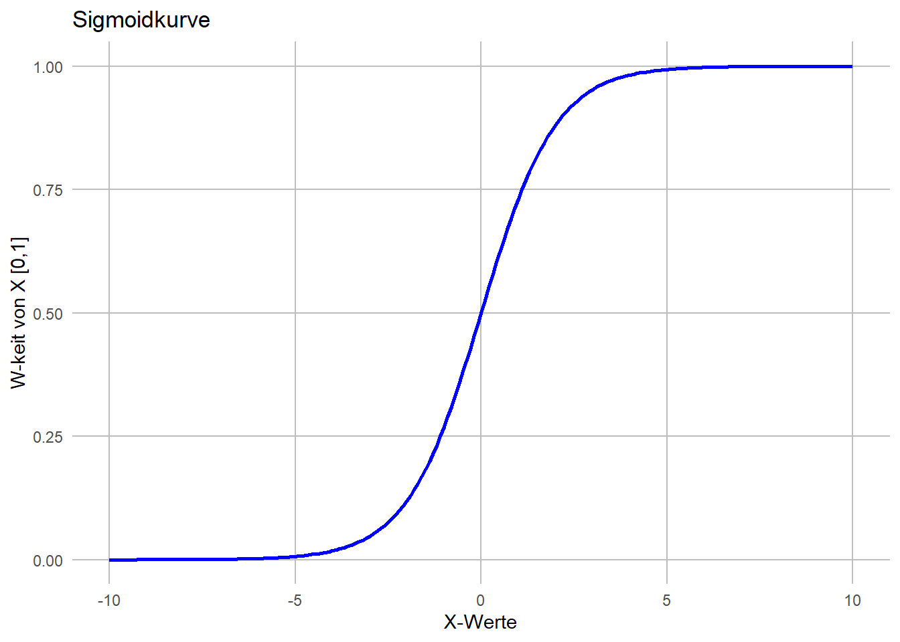
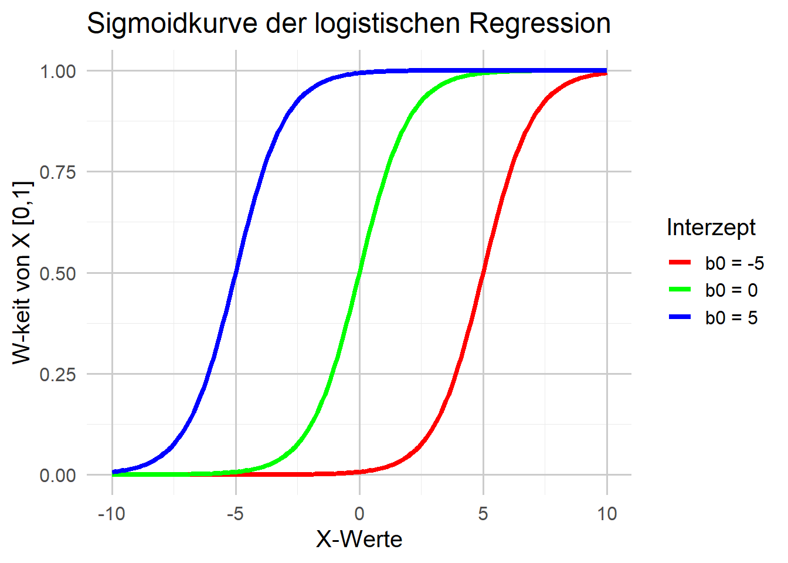
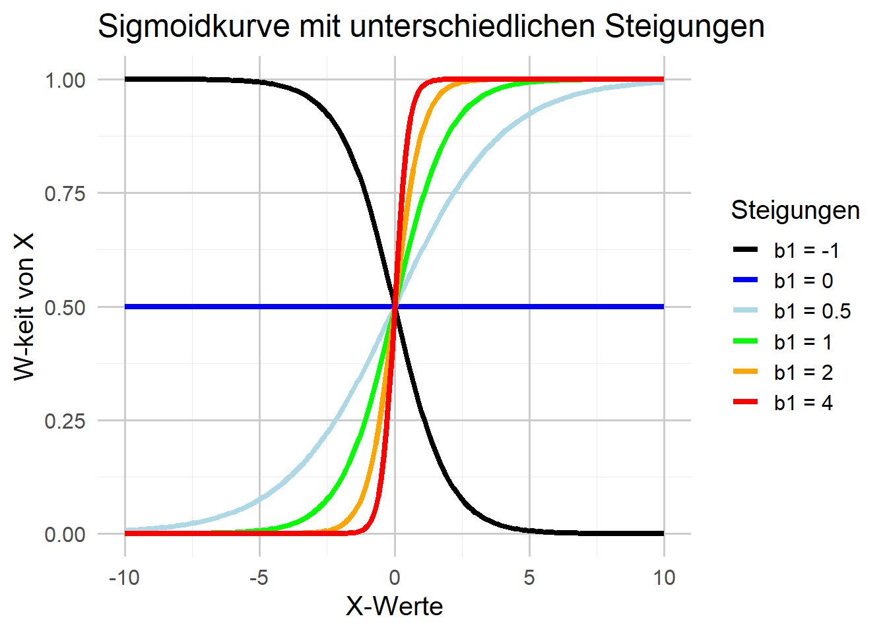

Theorie der logistischen Regression
Lineare Modelle
Das einfache lineare Modell mit einem Prädiktor hatten wir definiert durch:
\[Y_i = b_0 + b_1 \cdot X_i + \varepsilon_i\] Bei mehr als einen Prädiktor gilt:
\[Y_i = b_0 + b_1 \cdot X_{1i} + \cdots + b_k \cdot X_{ki} + \varepsilon_i\]
Logistische Funktion
Betrachten wir zunächst die folgende Funktion:
\[P(Y) = \frac{1}{1 + e^{-M}}\] Bei dieser Gleichung ist \(e\) die Basis des natürlichen Logarithmus. Die Variable \(M\) ist Platzhalter für beliebige Zahlenwerte. Für unsere Zwecke können wir \(M\) definieren als:
\[M := b_0 + b_1 \cdot X_{1i}\]
bzw. auch für multiple Prädiktoren als:
\[M := b_0 + b_1 \cdot X_{1i} + b_2 \cdot X_{2i} + \cdots + b_k \cdot X_{ki}\]
Die Graphik für Werte von \(M \epsilon [-10, 10]\) sieht dann z.B. folgendermaßen aus:

Wie bereits bei der linearen Regression bestimmen auch hier die Parameter die Form und die Position der Kurve. Die Parameter sind wiederum die \(b_0, b_1, \cdots, b_k\). Nachfolgend einige beispielhafte Kurven für unterschiedliche Parameterwerte in \(b_0\):

Aber auch in \(b_1\), oder der Kombination mit \(b_0\) ergeben sich unterschiedliche Kurven.

Durch einige einfache Umformungen der logistischen Funktion lassen sich sehr wichtige und interessante Eigenschaften dieses Modells ableiten. In einem ersten Schritt formen wir \(P(Y)\) derart um, sodass \(e^{-M}\) auf der linken Seite steht:
\[P(Y) = \frac{1}{1 + e^{-M}} \Rightarrow e^{-M} = \frac{1-P(Y)}{P(Y)}\] Da ein Wert in einer negativen Potenz gleich dem Kehrwert dieses Wertes in der entsprechenden positiven Potenz ist, bedeutet dies, dass \(e^{-M} = \frac{1}{e^M}\) ist. Nehmen wir gleich an beiden Seiten den Kehrwert und den Logarithmus, erhalten wir unter Anwendung der Gesetze für Potenzen und Logarithmen::
\[e^{M} = \frac{P(Y)}{1-P(Y)} \Rightarrow log_e(e^{M}) = log_e\left(\frac{P(Y)}{1-P(Y)} \right) \Rightarrow M \cdot \underbrace{log_e(e)}_{=1} = log\left(\frac{P(Y)}{1-P(Y)} \right)\] \[M = log_e\left(\frac{P(Y)}{1-P(Y)} \right)\] Durch Einsetzuen der oben angeführten Funktion für \(M\) ergibt sich:
\[b_0 + b_1 \cdot X_{1i} + \cdots b_k \cdot X_{ki} = log_e\left(\frac{P(Y)}{1-P(Y)} \right)\]
Bei dieser Darstellungsform wird es offensichtlich, dass wir ein lineares Modell verwenden. Allerdings ist die rechte Seite anders! Anstatt den Rohwert der Ergebnisvariablen vorherzusagen, sagen wir stattdessen den natürlichen Logarithmus der Wahrscheinlichkeit des Eintretens des Ereignisses geteilt durch die Wahrscheinlichkeit des Nichteintretens voraus.
Diese Wahrscheinlichkeit kennt man auch unter den Namen Odds, also:
\[Odds = \frac{P(Y)}{1-P(Y)}\] Damit können wir zusammenfassend festhalten, dass unser logistisches Regressionsmodell die \(log(\text{Odds von } Y)\) aus der Linearkombination der Prädiktoren vorhersagt! Die Interpretation der Parameter ist dabei genau so wie bei der einfachen, bzw. multiplen Regression:
- \(b_0\) sind die log odds der Kriteriumsvariablen, wenn alle Prädiktoren den Wert 0 haben.
- \(b_1\) sind die log odds der Kriteriumsvariablen, wenn der jeweilige Prädiktor um eine Einheit erhöht und dabei alle anderen Prädiktoren konstant gehalten werden.
- \(b_k\) sind die log odds der Kriteriumsvariablen, wenn Prädiktor \(k\) um eine Einheit erhöht und dabei alle anderen Prädiktoren konstant gehalten werden.
Odds Ratio
Obwohl die Interpretation der Parameter sich nicht von einer normalen linearen Regression unterscheidet, ist die Interpretation der logarithmischen Odds der Kriteriumsvariable schwierig. Durch eine weitere, einfache Umrechnung kann man aber auch dieses Problem leicht beheben. Die Umkehrfunktion zum Logarithmus (mit Basis \(e\)) ist die Exponentialfunktion (zur Basis \(e\)), also \(e^{b_0}, e^{b_1}, \cdots, e^{b_k}\). Die Interpretation ist dann wie folgt:
- \(e^{b_0}\) sind die odds der Kriteriumsvariablen, wenn alle Prädiktoren den Wert 0 haben.
- \(e^{b_1}\) sind die anteilsmäßigen Änderungen in den odds der Kriteriumsvariablen, wenn Prädiktor 1 um eine Einheit erhöht und dabei alle anderen Prädiktoren konstant gehalten werden.
- \(e^{b_k}\) sind die anteilsmäßigen Änderungen in den odds der Kriteriumsvariablen, wenn Prädiktor \(k\) um eine Einheit erhöht und dabei alle anderen Prädiktoren konstant gehalten werden.
WICHTIG:
bei der linearen Regression entspricht das \(b_i\) der tatsächlichen Änderung im Kriterium (\(Y\)), wenn der Prädiktor sich um einen Einheit erhöht. \[b = Y_{\text{erhöht um 1 EH}} - Y_{\text{vorheriger Wert}}\]
in der logistischen Regression gilt: \[b = log_e(odds_{\text{erhöht um 1 EH}}) - log_e(odds_{\text{vorheriger Wert}})\] Unter Anwendung der Regeln für den Logarithmus erhalten wir:
\[b = log_e\left(\frac{odds_{\text{erhöht um 1 EH}}}{odds_{\text{vorheriger Wert}}}\right)\] Die bereits oben durchgeführte Vereinfachung durch die Anwendung der Umkehrfunktion ergibt schlussendlich die Form:
\[e^{b} = \frac{odds_{\text{erhöht um 1 EH}}}{odds_{\text{vorheriger Wert}}}\] Dieser Ausdruck entspricht dem bekannten Odds Ratio (\(OR\)), wobei \(b\) der Regressionskoeffizient aus der logistischen Regression ist.
Interpretation der Odds-Ratio im Kontext Therapieerfolg
Die Odds-Ratio (OR) gibt an, wie stark die Erfolgsrate aus der Vergangenheit eines:r Therapeut:in die Chance auf einen aktuellen Therapieerfolg beeinflusst. Sie ergibt sich aus
\[e^{b} = \frac{ \text{odds}_{\text{bei um 1 Prozentpunkt höherer Erfolgsrate}} }{ \text{odds}_{\text{bei niedrigerer Erfolgsrate}} }\]
wobei \(b\) der Regressionskoeffizient (z.B. je ein Prozentpunkt bei der Erfolgsrate) aus der logistischen Regression ist.
a) Fall 1: \(e^{b} = 1\) — Kein Einfluss
Interpretation:
Ein Prozentpunkt mehr bei der vergangenen Erfolgsrate verändert die Odds für einen aktuellen Therapieerfolg nicht. Es besteht keinerlei Zusammenhang zwischen den bisherigen Erfolgen und dem aktuellen Behandlungserfolg.
Beispiel:
Ob ein:e Therapeut:in in der Vergangenheit eine Erfolgsrate von 40 % oder 70 % hatte: Die Chance auf einen aktuellen Behandlungserfolg bleibt gleich.
b) Fall 2: \(e^{b} > 1\) — Erhöhte Erfolgswahrscheinlichkeit
Interpretation:
Ein Prozentpunkt mehr bei der vergangenen Erfolgsrate erhöht die Odds für einen aktuellen Therapieerfolg. Erfolgreiche Therapeut:innen in der Vergangenheit sind mit höherer Wahrscheinlichkeit auch aktuell erfolgreich.
Beispiel:
Für \(e^{b} = 1.05\): Wenn Therapeut:in A eine frühere Erfolgsrate von 60 % hatte und Therapeut:in B 61 %, dann sind die Chancen von B auf einen aktuellen Therapieerfolg 5 % höher als die von A.
c) Fall 3: \(e^{b} < 1\) — Verringerte Erfolgswahrscheinlichkeit
Interpretation:
Ein Prozentpunkt mehr bei der vergangenen Erfolgsrate senkt die Odds für einen aktuellen Therapieerfolg. Das heißt, erfolgreiche Therapeut:innen in der Vergangenheit sind aktuell mit geringerer Wahrscheinlichkeit erfolgreich (etwa aufgrund von Zufall oder Überanstrengung).
Beispiel:
Für \(e^{b} = 0.95\): Wenn Therapeut:in X eine frühere Erfolgsrate von 70 % hatte und Therapeut:in Y 71 %, dann liegen die Chancen von Y auf einen aktuellen Therapieerfolg um 5 % niedriger als die von X.
Zusammenfassung:
| Wert von \(e^{b}\) | Interpretation |
|---|---|
| \(= 1\) | Kein Zusammenhang zwischen Erfolgsrate und aktuellem Therapieerfolg |
| \(> 1\) | Höhere Erfolgsrate → größere Erfolgswahrscheinlichkeit |
| \(< 1\) | Höhere Erfolgsrate → geringere Erfolgswahrscheinlichkeit |